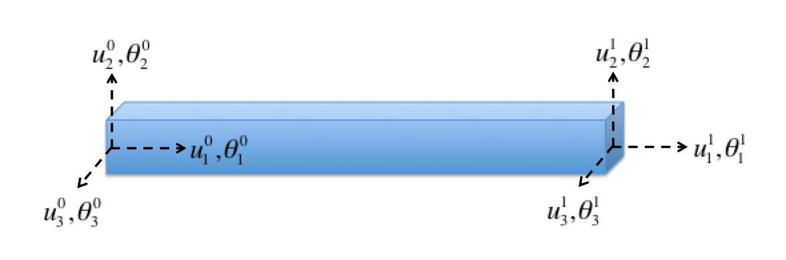

C0 Timoshenko Beam Element
A beam element Figure 1 is used to model the response of a structural element that is long in one dimension compared to its cross-section. There are two popular formulation of beam elements:

Figure 1: Beam element with 2 nodes and 3 translational and 3 rotational degrees of freedom at each node.
Euler-Bernoulli beam element: used to model bending deformation in long and slender beams. The two main assumptions in this beam theory are that: (i) the beam cross-section is rigid and does not deform under the application of transverse or lateral loads, and (ii) the cross-section of the beam remains planar and normal to the deformed axis of the beam.
Timoshenko beam element (Timoshenko, 1921; Timoshenko, 1922): used to model both shear and bending deformation in short and thick beams. The beam cross-section does not deform in this beam theory as well and it remains planar. But the cross-section need not be normal to the deformed axis of the beam. The Euler-Bernoulli beam element can be derived as a special case of the Timoshenko beam element.
Therefore, a C0 Timoshenko beam element is implemented in MOOSE. This element has two nodes and each node has 6 degrees of freedom (DOFs) - 3 translational and 3 rotational displacements. All the 12 DOFs are considered to be independent and the variation of both translational and rotational displacements along the length of the beam are modeled using first order Lagrange shape functions. The independent rotational DOFs at the nodes makes it easier to model the shear deformation which results in non-perpendicular cross-sections with respect to the beam axis.
The basic equation of motion for a quasi-static beam is the same as that of a continuum brick element:
An updated Lagrangian formulation similar to the one in Bathe and Bolourchi (1979) is used in the calculation of beam stresses and strains.
Strain Calculation
The first step to calculating stresses is to calculate the strains in the beam element. There are four main coordinate systems to consider - global coordinate system, original beam local coordinate system and beam local coordinate system at time and . In the updated Lagrangian formulation, starting from the configuration at time , the strain increment (which is a measure of the deformation of the beam) and rotation increment (which is a measure of the rigid rotation of the beam) are calculated to arrive at the state of the beam at .
Rotation increment
Let be the rotation matrix from the global coordinate system to the original beam local coordinate system. This is calculated using the unit vector along the axis of the beam (assumed to be the beam local x axis), the user-provided y_orientation that is orthonormal to the beam axis, and the cross product of the beam-axis and y_orientation. If the beam undergoes small deformation/rotation, the rotation matrix is not incrementally updated and the rotation matrix at () is assumed to be same as .
If the beam undergoes finite deformation, a rotation increment () that transforms the beam from beam local configuration at to the beam local configuration at is calculated at each time step. This calculation is performed using Euler angles as described below.
Let , and denote the translational displacements at node at . These displacements are the difference between the nodal positions at time and and are in the global coordinate system. Here 1, 2 and 3 refers to the x, y and z coordinate, respectively. Similarly, let , and denote the rotational displacements at node at in the global coordinate system. Let and be the differential displacements along the length of the beam.
These global displacements are converted to the beam local configuration at using the rotation matrix as follows:
These beam local displacements are then used in the calculation of the Euler angles , and as in Bathe and Bolourchi (1979). These Euler angles are used to calculate the rotation increment . Using , the rotation matrix at can be calculated as:
The rotation matrix is incrementally updated if ComputeFiniteBeamStrain is used. If ComputeIncrementalBeamStrain is used, the rotation matrix is same as the initially computed rotation matrix ().
Strain increment
To calculate the beam strain increment, the incremental beam displacements at time in the local configuration at are obtained using to transform the displacements from global to local configuration at . For simplifying notation, let and be the translational and rotational displacements at node at in the beam local configuration at . Interpolating the nodal DOFs along the axis of the beam using first order Lagrange shape functions gives and . However, only gives the translational displacement of the beam axis. The translational displacement at any point on the beam is obtained as follows:
The axial strain () and the shear strains ( and ) are then obtained as follows:
It should be noted here that using a linear interpolation of the rotational variables in the calculation of shear strain leads to shear locking of the beam. Using in the calculation of and ensures that the beam doesn't lock under shear deformation (Prathap and Bhashyam, 1982).
The above translational strain increments are functions of x, y and z. However, since the beam cross-section does not deform, these strains can be integrated over the cross-section to obtain strain increments as a function of only x.
where is the cross-sectional area, and . , and are the axial and shear increments.
Apart from the translational strain increments, rotational strain increments also need to be calculated.
where , , and . Note that is assumed to be zero for simplicity and this assumption is valid for symmetric cross-sections such as square, rectangular and circular. is automatically calculated from and unless is provided as input by the user.
The above strain increments are calculated using the small strain assumption. If the large_strain option in ComputeIncrementalBeamStrain or ComputeFiniteBeamStrain is set to true, then the strains are calculated using the equations below:
Note that for the large_strain calculation, , and are assumed to be zero for simplicity. This is again valid for symmetric cross-sections such as square, rectangular and circular cross-sections.
If displacement or rotational eigenstrains are provided as input, those eigenstrain increments would be subtracted from the total displacement and rotational strain increments to get the mechanical displacement and rotational strain increments.
Stress calculation
The axial and shear strain increments, and the rotational strain increments (after removal of eigenstrains) are passed to ComputeBeamResultants to calculate the force () and moment () increments using the linear elastic constitutive relations defined in ComputeElasticityBeam as follows: where and are the Young's and shear modulus, respectively. is the shear correction factor that depends on the shape of the cross-section.
Since the strain increments are in the beam local configuration at , the calculated force and moment increments are also in the same configuration. To get the total force and moment at , the force and moment increments are first transformed to the global coordinate system using and then added to the forces and moments from that are already in the global coordinate system.
The strain energy is calculated as:
As can be seen from the equation for , it depends only on if and are zero. But depends on both and . Therefore, would contribute to the residual of both the translational DOF in y direction and rotational DOF in the z direction. Similarly, would contribute to the residual of both the translational DOF in z direction and rotational DOF in the y direction. This accounts for the coupling between the shear and bending behavior of the beam. The stress-divergence calculation is performed in StressDivergenceBeam.
Dynamic beam
There are two main ways to include the inertial effects for the beam. The first method is to assign a uniform density to the beam and calculate a consistent mass/inertia matrix for the beam, and the second method assumes that the mass of the beam is concentrated at the ends of the beam, and represents the mass of the beam using point mass/inertia at the nodes at the end of the beam.
Consistent mass matrix
If , and are zero in InertialForceBeam, then there is no coupling between the rotational and translational DOFs. The residual for the translational degree of freedom at node can be obtained as follows:
where is the density of the beam, which is assumed to be constant through the length of the beam, and is the translational acceleration at node in direction.
The residual for the rotational degree of freedom can be obtained as follows: where or user provided for , for and for .
If and are non-zero, then there is coupling between , and , and , and and .
Point mass/inertia
NodalTranslationalInertia and NodalRotationalInertia are used to apply mass/inertia at a node. The mass and inertia terms contribute only to the residual of the node at which it is applied. Mass (m) behaves isotropically in all three coordinate directions resulting in the following translational nodal residual:
NodalRotationalInertia takes 6 rotational inertia components as input (, , , , , ). If the coordinate system in which the moment of inertia components are provided is different from the global coordinate system, then x_orientation and y_orientation need to be provided as input so that a transformation matrix from the local coordinate system to the global coordinate system can be calculated.
Once the moment of inertia tensor in the global coordinate system is obtained, the residual for the rotational DOF in the direction is:
Time-integration and damping
Rayleigh damping and Newmark and HHT time integration are calculated as in Damping but with StressDivergenceBeam and InertialForceBeam while using consistent mass/inertia matrix, and StressDivergenceBeam, NodalTranslationalInertia and NodalRotationalInertia while using point mass/inertia matrix.
References
- K. J. Bathe and S. Bolourchi.
Large displacement analysis of three-dimensional beam structures.
International Journal for Numerical Methods in Engineering, 14:961–986, 1979.[Export]
- G. Prathap and G. R. Bhashyam.
Reduced integration and the shear-flexible beam element.
International Journal for Numerical Methods in Engineering, 18:195–210, 1982.[Export]
- S. P. Timoshenko.
On the correction factor for shear of the differential equation for transverse vibrations of bars of uniform cross-section.
Philosophical Magazine, pages 744, 1921.[Export]
- S. P. Timoshenko.
On the transverse vibrations of bars of uniform cross-section.
Philosophical Magazine, pages 125, 1922.[Export]